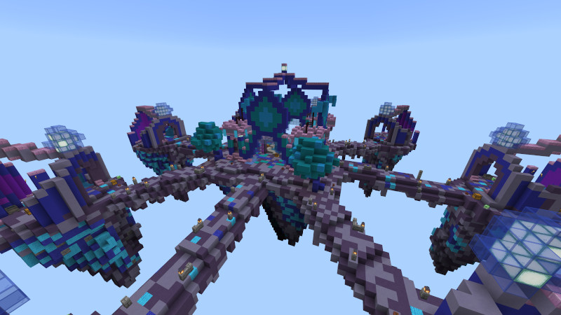

Minigame SkyWars
Um pouco sobre SkyWars:
SkyWars é um minigame o qual consiste em você nascer em uma
pequena base suspensa no ar onde você terá apenas dois baús, que estarão com itens como ferramentas,
armadura e blocos, os quais você usa para que possa se locomover para as ilhas principais,
onde nelas terão mais baús com itens melhores e mais recursos. Em nosso servidor
você pode comprar com moedas, as quais são adquiridas ao jogar em nossos minigames,
especialidades ao spawnar no jogo, como arqueiro a qual você recebe um arco e
8 flechas, guerreiro, onde recebe uma espada de ferro encantada, entre outras
especialidades. A dinâmica do jogo é simples, derrube seus inimigos para o vazio ou os
derrote em confrontos pvp, vence o último sobrevivente.
